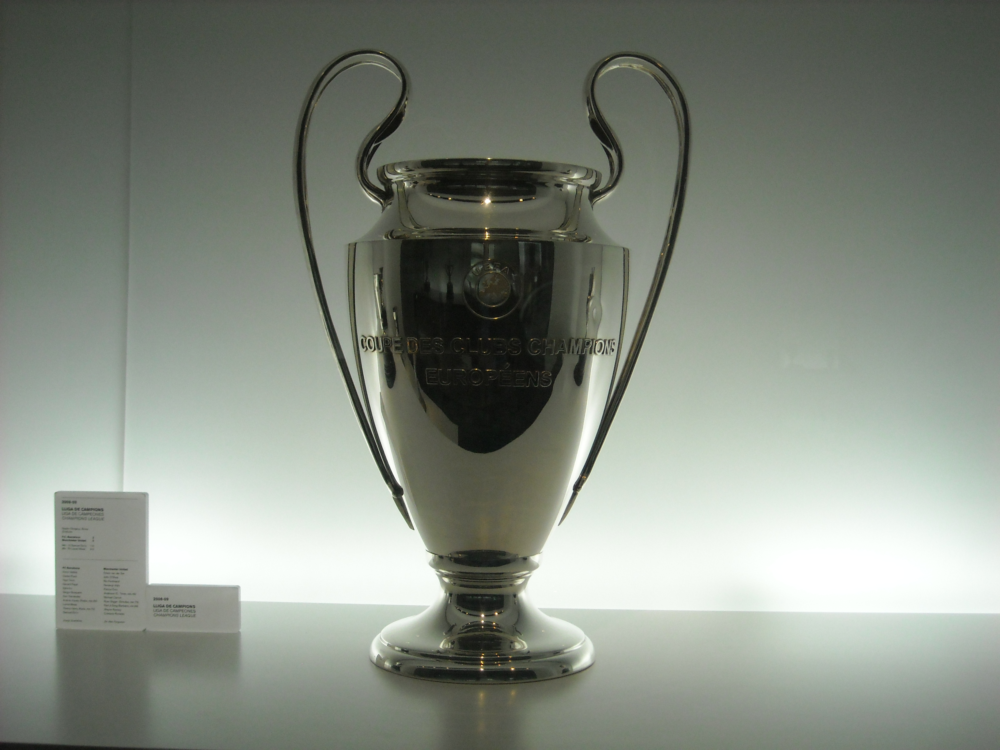

A Champions League é a principal competição de clubes do futebol europeu e uma das propriedades esportivas mais valiosas do planeta. Ao longo de mais de sete décadas, o torneio reuniu campeões nacionais, potências históricas, diferentes escolas táticas e alguns dos maiores jogadores de todos os tempos.
Conquistar a Champions significa ocupar um espaço restrito na história. Para os clubes, é a oportunidade de provar força além das fronteiras nacionais. Para jogadores e treinadores, representa o palco de maior pressão no futebol europeu e mundial. Para os torcedores, é a competição das grandes viradas, dos jogos eliminatórios e das finais que atravessam gerações.
O torneio mudou de nome, ampliou o número de participantes e adotou uma fase de liga com 36 equipes. Mesmo assim, preservou elementos que sustentam sua identidade: o hino, a bola estrelada, a taça “Orelhuda”, o mata-mata e a decisão em jogo único.
Como surgiu a Copa dos Campeões da Europa
A origem da competição está ligada ao jornal francês L’Équipe. Na década de 1950, o editor Gabriel Hanot e o jornalista Jacques Ferran defenderam a criação de um torneio que reunisse os principais clubes do continente.
A proposta foi apresentada às federações europeias e recebeu apoio da recém-criada Uefa. Em 21 de junho de 1955, a entidade aprovou a organização da Copa dos Clubes Campeões Europeus.
A primeira edição começou em setembro de 1955 e contou com 16 participantes. O jogo inaugural foi disputado em Lisboa, onde Sporting e Partizan empataram por 3 a 3.
Embora o projeto tivesse como base uma competição para campeões nacionais, somente sete dos participantes da edição inaugural haviam vencido suas respectivas ligas na temporada anterior. O prestígio e a representatividade dos clubes também tiveram peso na composição do torneio.
O primeiro campeão
A primeira decisão aconteceu em 13 de junho de 1956, no Parc des Princes, em Paris. O Stade de Reims abriu dois gols de vantagem, mas o Real Madrid reagiu e venceu por 4 a 3.
Alfredo Di Stéfano, Héctor Rial e Marquitos marcaram na virada espanhola. Rial fez dois gols, incluindo o que definiu o resultado.
Aquela conquista iniciou uma sequência que nunca mais foi repetida. O Real Madrid venceu as cinco primeiras edições, entre 1955/56 e 1959/60, e estabeleceu desde o nascimento uma relação especial com a competição.
A quinta taça veio com uma das maiores atuações da história das finais: vitória por 7 a 3 sobre o Eintracht Frankfurt, diante de mais de 127 mil pessoas no Hampden Park, em Glasgow. Ferenc Puskás marcou quatro vezes, enquanto Di Stéfano fez três gols.
Da Copa dos Campeões à Champions League
Durante suas primeiras décadas, a competição foi disputada essencialmente em confrontos eliminatórios de ida e volta. O modelo era mais restrito e privilegiava os campeões das ligas nacionais.
As transformações econômicas, comerciais e televisivas do futebol europeu levaram a Uefa a reformular o torneio. Uma fase de grupos foi introduzida em 1991/92 e, na temporada seguinte, nasceu oficialmente a UEFA Champions League.
A mudança não representou apenas uma nova denominação. A competição recebeu uma identidade visual própria, ampliou sua presença na televisão, incorporou mais clubes das principais ligas e se tornou progressivamente mais valiosa.
O primeiro campeão com a marca Champions League foi o Olympique de Marseille, que derrotou o Milan por 1 a 0 na final de 1992/93, com gol de Basile Boli.
Com o tempo, a participação deixou de ser exclusiva dos campeões nacionais. As ligas mais bem colocadas no ranking da Uefa passaram a classificar várias equipes, aumentando a presença das principais potências econômicas do continente.
O atual formato
Desde 2024/25, a antiga fase de grupos foi substituída por uma fase de liga com 36 clubes. Todas as equipes aparecem na mesma classificação, mas não enfrentam todos os adversários.
Cada participante disputa oito partidas contra oito equipes diferentes, sendo quatro jogos em casa e quatro como visitante.
O formato da fase de liga:
- 36 clubes participantes
- Oito partidas para cada equipe
- Quatro jogos em casa
- Quatro jogos fora
- Tabela única com os 36 participantes
As equipes são divididas em quatro potes para a definição dos confrontos. Cada clube enfrenta dois adversários de cada pote, com uma partida como mandante e outra como visitante.
Ao fim das oito rodadas:
- Do 1º ao 8º lugar — classificação direta para as oitavas de final
- Do 9º ao 16º — disputa dos playoffs como cabeça de chave
- Do 17º ao 24º — disputa dos playoffs sem condição de cabeça de chave
- Do 25º ao 36º — eliminação
Os oito vencedores dos playoffs completam as oitavas de final. A partir dessa etapa, os confrontos são disputados em jogos de ida e volta até as semifinais. A final permanece em partida única e sede escolhida previamente.
O novo modelo produz 189 jogos da fase de liga até a final:
- Fase de liga — 144 partidas
- Playoffs — 16 partidas
- Oitavas de final — 16 partidas
- Quartas de final — oito partidas
- Semifinais — quatro partidas
- Final — uma partida
O aumento em comparação com o antigo formato criou mais confrontos entre equipes tradicionais antes do mata-mata. Também elevou a exigência física, esportiva e logística dos clubes, que precisam conciliar a competição europeia com ligas, copas nacionais e partidas de seleções.
A taça e as grandes “orelhas”
O troféu da Champions League é um dos símbolos mais reconhecidos do futebol. Suas grandes alças deram origem a apelidos como “Orelhuda” no Brasil e “Copa das Grandes Orelhas” em diferentes partes da Europa.
A peça atual mede 73,5 centímetros e pesa aproximadamente 7,5 quilos. Na parte frontal está gravada a inscrição em francês “Coupe des Clubs Champions Européens”, mantendo viva a ligação com o nome original da competição.
O primeiro troféu, entregue em 1956, foi oferecido pelo L’Équipe e possuía alças menores. Depois do sexto título do Real Madrid, em 1966, o clube ficou definitivamente com aquela peça.
A Uefa encomendou então um novo modelo ao suíço Jürg Stadelmann. O trabalho levou cerca de 340 horas e resultou no desenho de grandes alças utilizado até hoje. O Celtic foi o primeiro campeão a receber essa versão, em 1967.
Durante décadas, o regulamento permitiu que um clube ficasse com o troféu original ao conquistar cinco títulos ou vencer três edições consecutivas. Real Madrid, Ajax, Bayern de Munique, Milan e Liverpool receberam versões originais da taça.
A regra foi alterada antes da temporada 2008/09. Atualmente, o troféu usado na cerimônia permanece sob propriedade da Uefa, enquanto o campeão recebe uma réplica em tamanho real com seu nome gravado.
Os maiores campeões
O Real Madrid lidera com grande vantagem a lista histórica. O ranking considera conjuntamente a antiga Copa dos Campeões e a Champions League.
Clubes com mais títulos:
- Real Madrid — 15
- Milan — 7
- Liverpool — 6
- Bayern de Munique — 6
- Barcelona — 5
- Ajax — 4
- Inter de Milão — 3
- Manchester United — 3
- Benfica — 2
- Chelsea — 2
- Juventus — 2
- Nottingham Forest — 2
- Paris Saint-Germain — 2
- Porto — 2
Clubes com um título:
- Aston Villa
- Borussia Dortmund
- Celtic
- Estrela Vermelha
- Feyenoord
- Hamburgo
- Manchester City
- Olympique de Marseille
- PSV Eindhoven
- Steaua Bucareste
Atual campeão: Paris Saint-Germain, vencedor da temporada 2025/26
Ao todo, 24 clubes diferentes já conquistaram a principal competição europeia. A Espanha lidera entre os países, com 20 títulos somados por Real Madrid e Barcelona. A Inglaterra aparece com 15, distribuídos entre seis campeões diferentes.
PSG bicampeão consecutivo
O Paris Saint-Germain conquistou seu primeiro título em 2024/25, com uma goleada por 5 a 0 sobre a Inter de Milão, em Munique. Foi a maior diferença de gols registrada em uma final da história da competição.
Achraf Hakimi abriu o placar, Désiré Doué marcou duas vezes, Khvicha Kvaratskhelia fez o quarto e Senny Mayulu fechou a goleada. A conquista retirou o PSG da lista de grandes clubes europeus que nunca haviam levantado a taça.
Na temporada seguinte, o time de Luis Enrique voltou à decisão e enfrentou o Arsenal no Puskás Aréna, em Budapeste, em 30 de maio de 2026.
Kai Havertz colocou o Arsenal na frente aos seis minutos. Ousmane Dembélé empatou em cobrança de pênalti aos 20 minutos do segundo tempo. Depois do 1 a 1 no tempo normal e na prorrogação, o PSG venceu a disputa por 4 a 3.
Eberechi Eze e Gabriel Magalhães desperdiçaram cobranças pelo Arsenal. Nuno Mendes perdeu pelo PSG, mas a equipe francesa converteu quatro de suas cinco tentativas e confirmou o bicampeonato.
O clube de Paris se tornou apenas o segundo clube a defender o título desde a criação da Champions League em 1992/93. O outro foi o Real Madrid, que venceu três vezes seguidas entre 2015/16 e 2017/18.
A maior relação da história da competição
Nenhum clube possui uma ligação tão forte com o torneio quanto o Real Madrid. Além dos 15 títulos, a equipe venceu todas as nove finais que disputou desde a adoção do nome Champions League.
As conquistas do Real Madrid:
- 1955/56
- 1956/57
- 1957/58
- 1958/59
- 1959/60
- 1965/66
- 1997/98
- 1999/2000
- 2001/02
- 2013/14
- 2015/16
- 2016/17
- 2017/18
- 2021/22
- 2023/24
O clube construiu três grandes ciclos. O primeiro foi o pentacampeonato iniciado em 1956. O segundo veio entre o fim dos anos 1990 e o começo dos anos 2000, com três títulos em cinco temporadas. O terceiro reuniu seis conquistas entre 2014 e 2024.
A equipe também é a única a ter vencido três edições consecutivas na era moderna, com Zinedine Zidane no comando e Cristiano Ronaldo como principal referência ofensiva.
A relação se alimenta nos dois sentidos: a Champions ajudou a transformar o Real Madrid em uma marca global, enquanto as campanhas merengues ajudaram a construir a mística da competição.
O bloco perseguidor
O Milan é o segundo maior campeão, o clube italiano venceu em 1963, 1969, 1989, 1990, 1994, 2003 e 2007.
As equipes comandadas por Arrigo Sacchi e Fabio Capello no fim dos anos 1980 e início dos anos 1990 ajudaram a transformar conceitos de pressão, compactação e linha defensiva. O Milan de Carlo Ancelotti também alcançou três finais entre 2003 e 2007, vencendo duas.
Liverpool e Bayern de Munique possuem seis conquistas cada.
Títulos do Liverpool:
- 1976/77
- 1977/78
- 1980/81
- 1983/84
- 2004/05
- 2018/19
O time inglês construiu parte de sua identidade europeia em Anfield, com viradas e ambientes que fizeram das noites continentais um elemento central da história do clube.
Títulos do Bayern de Munique:
- 1973/74
- 1974/75
- 1975/76
- 2000/01
- 2012/13
- 2019/20
O Bayern é um dos poucos clubes que venceram três edições consecutivas. Sua trajetória está detalhada no conteúdo sobre os seis títulos na competição.
A mudança da maneira de jogar
O Barcelona conquistou seus títulos em 1992, 2006, 2009, 2011 e 2015.
A primeira taça veio com o time comandado por Johan Cruyff. Posteriormente, as gerações lideradas por Ronaldinho e Lionel Messi consolidaram o clube entre as principais potências da competição.
O Barcelona de Pep Guardiola, campeão em 2009 e 2011, marcou época pela combinação de posse de bola, pressão após a perda e jogadores formados em La Masia. Xavi, Andrés Iniesta, Sergio Busquets, Carles Puyol, Gerard Piqué e Messi formaram a base de uma das equipes mais influentes da era moderna.
O Ajax conquistou em 1971, 1972, 1973 e 1995. O tricampeonato da década de 1970 ficou ligado ao Futebol Total e à geração de Johan Cruyff. A taça de 1995 veio com uma equipe jovem comandada por Louis van Gaal.
As finais mais históricas
A competição construiu sua reputação por meio de decisões que produziram viradas, goleadas, prorrogações e disputas por pênaltis.
Algumas das finais mais marcantes:
- 1956 — Real Madrid 4 x 3 Stade de Reims
A primeira decisão teve sete gols, duas viradas no placar e o início da hegemonia espanhola. - 1960 — Real Madrid 7 x 3 Eintracht Frankfurt
Puskás marcou quatro vezes e Di Stéfano fez três. A partida permanece como a final com mais gols. - 1986 — Steaua Bucareste 0 x 0 Barcelona
O Steaua venceu por 2 a 0 nos pênaltis. O goleiro Helmuth Duckadam defendeu as quatro cobranças realizadas pelo Barcelona. - 1999 — Manchester United 2 x 1 Bayern de Munique
O Bayern vencia até os acréscimos. Teddy Sheringham e Ole Gunnar Solskjær marcaram aos 46 e 48 minutos do segundo tempo. - 2005 — Liverpool 3 x 3 Milan
O Milan abriu 3 a 0 no primeiro tempo, mas o Liverpool empatou em um intervalo de seis minutos e venceu por 3 a 2 nos pênaltis. - 2012 — Chelsea 1 x 1 Bayern de Munique
Jogando no estádio do adversário, o Chelsea empatou com Didier Drogba aos 43 minutos do segundo tempo e venceu por 4 a 3 nos pênaltis. - 2014 — Real Madrid 4 x 1 Atlético de Madrid
O Atlético ficou perto do título, mas Sergio Ramos empatou aos 48 minutos da etapa final. O Real marcou mais três vezes na prorrogação e conquistou a Décima. - 2025 — Paris Saint-Germain 5 x 0 Inter de Milão
O PSG conquistou sua primeira taça com a maior goleada já registrada em uma final. - 2026 — Paris Saint-Germain 1 x 1 Arsenal
Depois do empate no tempo normal e na prorrogação, o PSG venceu por 4 a 3 nos pênaltis e confirmou o bicampeonato.
As finais mostram como a competição consegue produzir diferentes tipos de memória. Algumas ficaram marcadas pelo domínio absoluto. Outras, pela capacidade de sobreviver quando a derrota parecia inevitável.
Viradas que definiram as noites de Champions
A mística da competição não está apenas nas finais. Algumas das partidas mais lembradas aconteceram durante o mata-mata.
Barcelona 6 x 1 PSG, em 2017
O time francês venceu a ida das oitavas de final por 4 a 0. No Camp Nou, o Barcelona precisava de uma reação praticamente impossível e marcou três gols nos minutos finais para fechar o confronto com uma vitória por 6 a 1.
Roma 3 x 0 Barcelona, em 2018
Depois de perder por 4 a 1 na Espanha, a Roma venceu por 3 a 0 no Estádio Olímpico e avançou pelo critério de gols fora de casa. Kostas Manolas marcou o gol decisivo.
Liverpool 4 x 0 Barcelona, em 2019
O Barcelona havia vencido a ida da semifinal por 3 a 0. Sem Mohamed Salah e Roberto Firmino, o Liverpool marcou quatro vezes em Anfield e completou uma das maiores viradas da história do torneio.
Real Madrid em 2021/22
Naquela campanha, o time Merengue eliminou PSG, Chelsea e Manchester City em confrontos nos quais esteve próximo da eliminação. Karim Benzema, Rodrygo, Vinícius Júnior, Luka Modrić e Thibaut Courtois foram protagonistas de uma trajetória que terminou com o título sobre o Liverpool.
Esses jogos mostram por que uma eliminatória não termina enquanto houver tempo. A combinação entre estádio, pressão, talento e fragilidade emocional pode mudar completamente o roteiro de um confronto.
Os maiores artilheiros
Cristiano Ronaldo é o maior goleador, se tornando um também um símbolo da história da competição. O português foi campeão uma vez pelo Manchester United e quatro pelo Real Madrid.
Jogadores com mais gols na Champions:
- Cristiano Ronaldo — 140 gols
- Lionel Messi — 129 gols
- Robert Lewandowski — 109 gols
- Karim Benzema — 90 gols
- Raúl González — 71 gols
- Kylian Mbappé — 70 gols
Messi conquistou quatro títulos pelo Barcelona e foi o principal jogador de dois ciclos históricos do clube. Lewandowski construiu seus números por Borussia Dortmund, Bayern de Munique e Barcelona. Benzema foi um dos grandes protagonistas do Real Madrid, especialmente na campanha de 2021/22.
Outros fatos da competição:
- Mais gols em uma edição — Cristiano Ronaldo, com 17 em 2013/14
- Primeiro campeão inglês — Manchester United, em 1968
- Primeiro campeão francês — Olympique de Marseille, em 1993
- Primeiro campeão português — Benfica, em 1961
- Primeiro campeão neerlandês — Feyenoord, em 1970
- Único clube com dois títulos e duas finais — Nottingham Forest
- Primeiro clube a vencer todos os oito jogos da fase de liga — Arsenal, em 2025/26
- Maior número de gols da fase de liga até a final em uma campanha — Barcelona em 1999/2000 e PSG em 2025/26, com 45
A Champions combina recordes de domínio com histórias improváveis. O Nottingham Forest, por exemplo, venceu duas vezes consecutivas, em 1979 e 1980, mesmo sem manter presença constante entre as principais potências europeias.
Os técnicos com mais títulos
Carlo Ancelotti é o treinador mais vitorioso da história da Copa dos Campeões e da Champions League, com cinco conquistas.
Técnicos com mais títulos:
- Carlo Ancelotti — cinco títulos
- Milan: 2002/03 e 2006/07
- Real Madrid: 2013/14, 2021/22 e 2023/24
- Bob Paisley — três títulos
- Liverpool: 1976/77, 1977/78 e 1980/81
- Zinedine Zidane — três títulos
- Real Madrid: 2015/16, 2016/17 e 2017/18
- Pep Guardiola — três títulos
- Barcelona: 2008/09 e 2010/11
- Manchester City: 2022/23
- Luis Enrique — três títulos
- Barcelona: 2014/15
- Paris Saint-Germain: 2024/25 e 2025/26
Luis Enrique entrou nesse grupo ao comandar o bicampeonato do PSG. Ele também se tornou um dos poucos treinadores a vencer por dois clubes diferentes.
Zidane é o único técnico a conquistar três edições consecutivas na era Champions. Paisley venceu suas três taças em apenas cinco temporadas. Ancelotti alcançou o recorde comandando Milan e Real Madrid em diferentes gerações.
A importância financeira
A Champions é decisiva para o planejamento dos clubes porque distribui valores muito superiores aos oferecidos pelas outras competições continentais.
Na temporada 2025/26, €2,467 bilhões foram destinados aos participantes da Champions League e da Supercopa da Uefa. A maior parte ficou com as 36 equipes da fase de liga.
Cada clube classificado para a fase principal recebeu inicialmente €18,62 milhões.
Premiações por resultado na fase de liga:
- Vitória — €2,1 milhões
- Empate — €700 mil
Além desses valores, as equipes receberam bônus pela posição final na tabela. A primeira colocada ficou com 36 cotas de um valor inicial de €275 mil, enquanto a última recebeu uma cota. Os oito primeiros ainda ganharam €2 milhões extras, e os clubes entre o 9º e o 16º lugar receberam €1 milhão.
Premiações pelo avanço no mata-mata:
- Classificação para os playoffs — €1 milhão
- Classificação para as oitavas — €11 milhões
- Classificação para as quartas — €12,5 milhões
- Classificação para as semifinais — €15 milhões
- Classificação para a final — €18,5 milhões
- Título — €6,5 milhões adicionais
Somente a chegada à decisão e a conquista da taça renderam ao campeão €25 milhões. O valor é formado pelos €18,5 milhões pagos aos finalistas e pelos €6,5 milhões adicionais entregues ao vencedor.
Como o PSG disputou os playoffs e percorreu todas as fases até o título, recebeu pelo menos €83,12 milhões nas parcelas fixas de participação e progressão. O total foi maior porque também incluiu vitórias, empates, posição na fase de liga e a chamada cota de valor, calculada a partir de direitos de transmissão e coeficientes históricos.
Por isso, não existe um único “prêmio da final” que represente toda a receita do campeão. O dinheiro é acumulado durante a campanha e varia de acordo com resultados, classificação, mercado de mídia e histórico do clube.
Como funciona a cota de valor
Além das parcelas iguais e dos bônus esportivos, a Uefa reservou €853 milhões para o chamado pilar de valor na temporada 2025/26.
Essa parte substituiu elementos do antigo market pool e do ranking de coeficientes. O cálculo considera dois grandes blocos:
- Valor dos direitos de transmissão nos mercados europeus
- Valor dos direitos vendidos fora da Europa
Também entram no sistema a força comercial do mercado nacional e o desempenho histórico do clube nas competições da Uefa.
Isso explica por que duas equipes com campanhas semelhantes podem terminar a temporada recebendo valores diferentes. Clubes de mercados televisivos maiores ou com coeficientes históricos superiores tendem a obter parcelas mais altas.
O alcance global da competição
A Champions League é transmitida em mais de 200 países e territórios. Sua presença internacional se sustenta por acordos de televisão, plataformas digitais, patrocinadores globais e uma base de torcedores distribuída por todos os continentes.
Em um dos levantamentos divulgados pela Uefa, a temporada 2019/20 alcançou uma audiência acumulada de 2,4 bilhões de pessoas em toda a programação relacionada à competição.
Esse alcance transforma cada partida em uma vitrine. Um clube que chega às fases decisivas não recebe apenas premiação: amplia exposição para patrocinadores, fortalece sua marca, valoriza jogadores e aumenta o potencial de receitas comerciais.
A final concentra essa dimensão. A decisão é produzida para uma audiência mundial e utiliza uma estrutura tecnológica comparável à de grandes eventos internacionais. Em 2026, a transmissão oficial contou com 42 câmeras, incluindo drones, sistema aéreo, helicóptero e equipamentos de alta velocidade.
A final passou para um novo horário em 2026
A decisão entre PSG e Arsenal marcou uma mudança no horário da final. A partir de 2026, a Uefa antecipou o início das partidas de 21h para 18h no horário da Europa Central.
A alteração buscou facilitar a mobilidade dos torcedores, melhorar o retorno após o jogo, ampliar a presença de famílias e permitir que as cidades-sede organizassem melhor o fluxo de público.
A final continua sendo disputada aos sábados, em estádio escolhido previamente pela Uefa.
A construção de uma identidade cultural
O hino oficial foi criado em 1992 pelo compositor britânico Tony Britten. A música utiliza elementos de “Zadok the Priest”, obra de Georg Friedrich Händel composta para a coroação do rei George II, em 1727.
A letra mistura os três idiomas oficiais da Uefa:
- Inglês
- Francês
- Alemão
A gravação original foi feita pela Royal Philharmonic Orchestra e pelo coro da Academy of Saint Martin in the Fields.
O hino é executado antes das partidas e se tornou parte essencial da experiência. Para jogadores e torcedores, sua reprodução no estádio representa a entrada em um ambiente diferente das competições nacionais.
A bola com estrelas, o arco montado no campo, as placas publicitárias e a cerimônia de entrada completam uma identidade visual e sonora reconhecida mundialmente.
A principal competição de clubes do mundo
A Champions conseguiu crescer comercialmente sem abandonar os principais elementos que construíram sua tradição.
O formato mudou, o número de participantes aumentou e a competição passou a distribuir bilhões de euros. Ainda assim, uma eliminatória continua sendo definida por detalhes: um gol fora do roteiro, uma defesa nos pênaltis, uma virada diante da torcida ou uma atuação individual capaz de alterar uma temporada inteira.
O Real Madrid permanece como a maior referência histórica. Milan, Liverpool, Bayern, Barcelona e Ajax representam diferentes escolas vencedoras. O bicampeonato do PSG mostrou que novas potências também podem construir seus próprios ciclos.
A competição também preserva espaço para histórias que desafiam a lógica. Nottingham Forest, Steaua Bucareste, Estrela Vermelha, Aston Villa, Celtic e Feyenoord provaram em diferentes épocas que o torneio não pertence exclusivamente aos clubes de maior orçamento.
No fim, a Champions League é o lugar em que o futebol europeu mede grandeza continental. Vencer uma liga nacional prova regularidade ao longo de uma temporada. Levantar a Orelhuda significa superar fronteiras, estilos, ambientes e alguns dos adversários mais fortes do planeta.
É por isso que cada edição começa com a mesma promessa: novos confrontos, novas quedas, novas viradas e a possibilidade de uma noite entrar definitivamente para a história do futebol.